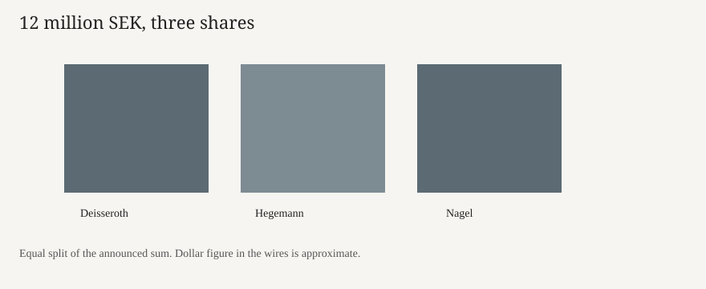

Stockholm · science · 5 October 2026
The Nobel Assembly awarded medicine to Deisseroth, Hegemann and Nagel for optogenetics

What the desks agree
On Monday 5 October 2026 the Nobel Assembly at Karolinska Institutet in Stockholm awarded the Nobel Prize in Physiology or Medicine to Karl Deisseroth, Peter Hegemann and Georg Nagel. The citation, quoted by Reuters and the Associated Press, is “discoveries concerning light-gated ion channels and optogenetics.” Deisseroth, 54, is at Stanford University in California. Hegemann, 71, is at Humboldt University in Berlin. Nagel, 73, is at the University of Würzburg. They share 12 million Swedish kronor, about 1.2 million dollars at the rate used in the wire copy. The medicine prize opens Nobel week. The ceremony is later in the year; Monday was the announcement.
The Associated Press, Reuters and the BBC describe the same method. Channelrhodopsins, proteins first studied in green algae, open an ion channel when light hits them. Put into a nerve cell, they let a researcher switch that cell on or off with a pulse of light instead of a drug that bathes the whole circuit. Reuters says Nagel and Hegemann identified the algal mechanism and that Deisseroth showed the technique in rat nerve cells two years later. The name optogenetics dates to 2006 in that account. The BBC quotes the Assembly that the method is used to study circuits tied to specific memories, feelings and behaviours relevant to neurological and psychiatric disorders, and that clinical groups are testing it to restore sight.
What is only a quote
Thomas Perlmann of the Assembly told Reuters that all three laureates were surprised and delighted, and that each called the shared prize wonderful. That is a report of a phone call, not a measurement of the science. The BBC’s line that optogenetics has “fundamentally altered our understanding of the brain” is the committee’s praise. A reader can treat it as the award’s rationale. It is not an independent audit of how many clinical trials have a result.
Ages, affiliations and the prize sum match across AP and Reuters. The dollar figure moves with the krona. Neither wire published the Assembly’s full scientific background paper in the versions scored here. Claims about restored sight are framed as research use, not as an approved therapy with a named trial and a patient count.
The mechanism a reader needs
Nerve cells fire when ions cross the membrane. For most of the twentieth century the tools were electrodes, which touch one cell at a time, and drugs, which hit every receptor of a type. Optogenetics borrows a molecular switch from algae that live by swimming toward light. The gene for the switch can be delivered by a virus to a chosen cell type. A fibre or an implanted LED then delivers the light. The result is a causal test: if silencing these cells removes a behaviour, and activating them restores it, the circuit is doing work that a correlation from a scanner cannot show alone.
The U.S. stake is institutional as well as scientific. One of the three laureates works at Stanford, and the method is now standard in U.S. neuroscience labs funded by the National Institutes of Health. The prize does not move a federal budget line on Monday. It does fix a public record of who is credited. Disputes over priority are common in this field; the Assembly’s choice of these three names is the decision of record for the prize, not a court judgment on every paper.
Nobel announcements are a Swedish committee acting under Alfred Nobel’s will. They are not a U.S. government award. The medicine prize has, in recent years, often gone to basic methods that later reach clinics. Last year’s prize, AP notes, went to immune-system work. That sequence does not predict Tuesday’s physics prize.
What this story is not
It is not a claim that optogenetics cures a named disease as of Monday. It is not a photograph of the laureates. The campus frame is from 2019. It is not a dollar grant. The 12 million kronor is the prize sum split three ways, before tax rules in each country. It is not a ranking of U.S. universities.


Source articles and scores
| Outlet | Headline | T | N | C |
|---|---|---|---|---|
| Associated Press | Nobel medicine prize goes to 3 scientists for research into brain activity | 96 | 0 | 100 |
| Reuters | German and US scientists win Nobel medicine prize for work on light and brain | 95 | 0 | 98 |
| BBC | Nobel Prize awarded for showing inner workings of the brain | 93 | -2 | 94 |